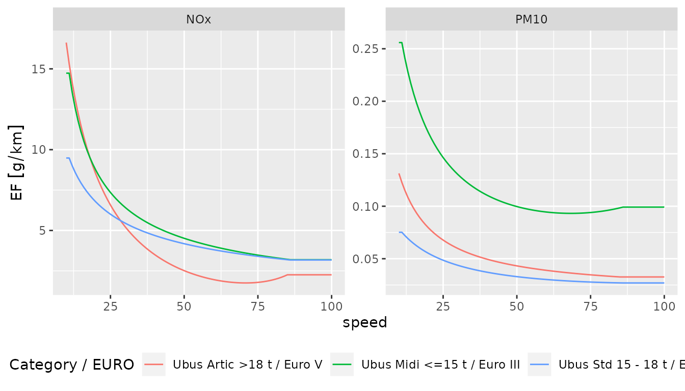

Exploring Emission Factors
2022-11-04
Source:vignettes/gtfs2emis_emission_factor.Rmd
gtfs2emis_emission_factor.RmdEmission factor models tell us the mass of pollutants that are expected to be emitted by a given vehicle given a few characteristics such as vehicle age, type, fuel, technology, speed, and distance traveled. Various environmental agencies develop these functional relations based on data collected from local measurements. Understanding how emission factor data work is very important to understand how the emission estimates of a given vehicle or public transport system are influenced by the methodological choices of which emission factor model should be used. This vignette helps users explore the emission factors data available in the gtfs2emis package.
Available emission factor models
The gtfs2emis package currently includes emission factor data from four environmental agencies. Reports with detailed information and methos on how these emission factor data were originally calculated can be found on the agencies’ websites in the links below
- Brazil, Environment Company of São Paulo — CETESB
- United States, Environmental Protection Agency — MOVES3 Model
- United States, California Air Resources Board — EMFAC2017 model
- Europe, European Environment Agency — EMEP-EEA
Visualizing emission factor data
Emission fator values vary by fleet characteristics — as shown in Defining Fleet data vignette. In this section we will use the ef_europe_emep() function and look at three types of urban buses (Midi, Standard and Articulated) to illustrate how emissions vary according to vehicle type, average speed, and pollutant.
library(gtfs2emis)
library(units)
#> udunits database from /usr/share/xml/udunits/udunits2.xml
library(ggplot2)
ef_europe <- ef_europe_emep(speed = units::set_units(10:100,"km/h")
,veh_type = c("Ubus Midi <=15 t"
,"Ubus Std 15 - 18 t"
,"Ubus Artic >18 t")
,euro = c("III", "IV", "V")
,pollutant = c("PM10", "NOx")
,fuel = c("D", "D", "D")
,tech = c("-", "SCR", "SCR")
,as_list = TRUE)
names(ef_europe)
#> [1] "pollutant" "veh_type" "euro" "fuel" "tech" "slope"
#> [7] "load" "speed" "EF"In the case above, the function returns a list that contains all the relevant information for the emission factor — shown in names(ef_europe). However, it may be useful to check the emission factor results in a data.frame or graphic format.
ef_europe_dt <- emis_to_dt(emi_list = ef_europe
,emi_vars = "EF"
,veh_vars = c("veh_type","euro","fuel","tech")
,pol_vars = "pollutant"
,segment_vars = c("slope","load","speed"))
head(ef_europe_dt)
#> veh_type euro fuel tech pollutant EF slope load speed
#> 1: Ubus Midi <=15 t III D - PM10 0.2559070 [g/km] 0 0.5 10
#> 2: Ubus Midi <=15 t III D - PM10 0.2559070 [g/km] 0 0.5 11
#> 3: Ubus Midi <=15 t III D - PM10 0.2413421 [g/km] 0 0.5 12
#> 4: Ubus Midi <=15 t III D - PM10 0.2285624 [g/km] 0 0.5 13
#> 5: Ubus Midi <=15 t III D - PM10 0.2172637 [g/km] 0 0.5 14
#> 6: Ubus Midi <=15 t III D - PM10 0.2072074 [g/km] 0 0.5 15
#> segment_id
#> 1: 1
#> 2: 2
#> 3: 3
#> 4: 4
#> 5: 5
#> 6: 6Plotting the speed-dependent emission factors according to vehicle type (veh_type) and euro standard (euro).
ef_europe_dt$name_fleet <- paste(ef_europe_dt$veh_type, "/ Euro"
, ef_europe_dt$euro)
# plot
ggplot(ef_europe_dt) +
geom_line(aes(x = speed,y = EF,color = name_fleet))+
labs(color = "Category / EURO")+
facet_wrap(~pollutant,scales = "free")+
theme(legend.position = "bottom") In a few situations in ef_europe_emep(), when the information on vehicle technology does not match the existing database, the package displays a message indicating the technology considered. Users can either select existing data for the combining variables (euro, tech, veh_type, and pollutant), or accept the assumed change in vehicle technology.
ef_europe_co2 <- ef_europe_emep(speed = units::set_units(10:100,"km/h")
,veh_type = "Ubus Std 15 - 18 t"
,euro = "VI",pollutant = "CO2"
,tech = "DPF+SCR"
,as_list = TRUE)
#> 'CO2' Emission factor not found for 'DPF+SCR' Technology and Euro 'VI'.
#> The package assumed 'SCR' Technology entry. Please check `data(ef_europe_emep_db)` for available data.The other EF functions, ef_usa_emfac(), ef_usa_moves() and ef_brazil_cetesb() work in a similar way. See the functions documentation for more detail.
Scaling Emission Factors: making emission facotrs speed-dependent
For most models (MOVES3, EMEP-EEA and EMFAC2017), emission factors depend on a vehicle’s speed. However, the emission factors developed for Brazil by CETESB (ef_brazil_cetesb()) do not vary by vehicle speed. In such a case, users can “scale” or adjust the local emission factor values to make them speed-dependent using the function ef_scaled_euro().
When using the EMEP-EEA model as a reference, the scaled emission factor varies according to vehicle’s speed following the expression:
\[ EF_{scaled} (V) = EF_{local} * \frac{EF_{euro}(V)}{EF_{euro}(SDC)}, \] where \(EF_{scaled}(V)\) is the scaled emission factor for each street link, \(EF_{local}\) is the local emission factor, \(EF_{euro}(V)\) and \(EF_{euro}(SDC)\) are the EMEP/EEA emission factor the speed of V and the average urban driving speed SDC, respectively.
The scaled behavior of EF can be verified graphically when we plot the \(EF_{local}\), \(EF_{scaled}(V)\), and the \(EF_{euro}(V)\) that is used as the reference To plot these data, we need six quick steps:
- Build a
data.frameof fleet indicating the correspondence between the fleet characteristic in the local and European emission models
fleet_filepath <- system.file("extdata/bra_cur_fleet.txt", package = "gtfs2emis")
cur_fleet <- read.table(fleet_filepath,header = TRUE, sep = ",", nrows = 1)
cur_fleet
#> year euro shape_id type_name_br veh_type total fuel
#> 1 2006 III 1849 BUS_URBAN_D Ubus Std 15 - 18 t 2 D- Estimate local emission factors
cur_local_ef <- ef_brazil_cetesb(pollutant = "CO2"
,veh_type = cur_fleet$type_name_br
,model_year = cur_fleet$year)
head(cur_local_ef)
#> $pollutant
#> [1] "CO2"
#>
#> $veh_type
#> [1] "BUS_URBAN_D"
#>
#> $model_year
#> [1] 2006
#>
#> $EF
#> Units: [g/km]
#> CO2_2006
#> [1,] 1385.626
# convert Local EF to data.frame
cur_local_ef_dt <- emis_to_dt(emi_list = cur_local_ef
,emi_vars = "EF")- Estimate
ef_emep_europe
# Euro EF
cur_euro_ef <- ef_europe_emep(speed = units::set_units(10:100,"km/h")
,veh_type = cur_fleet$veh_type
,euro = cur_fleet$euro
,pollutant = "CO2"
,tech = "-"
)
# convert to data.frame
cur_euro_ef_dt <- emis_to_dt(emi_list = cur_euro_ef
,emi_vars = "EF"
,veh_vars = c("veh_type","euro","fuel","tech")
,segment_vars = "speed")
cur_euro_ef_dt$source <- "Euro EF"- Apply
ef_scaled_euro()
cur_scaled_ef <- ef_scaled_euro(ef_local = cur_local_ef$EF
,speed = units::set_units(10:100,"km/h")
,veh_type = cur_fleet$veh_type
,euro = cur_fleet$euro
,pollutant = "CO2"
,tech = "-"
)
# convert to data.frame
cur_scaled_ef_dt <- emis_to_dt(emi_list = cur_scaled_ef
,emi_vars = "EF"
,veh_vars = c("veh_type","euro","fuel","tech")
,segment_vars = "speed")
cur_scaled_ef_dt$source <- "Scaled EF"- View in ggplot2
# rbind data
cur_ef <- rbind(cur_euro_ef_dt, cur_scaled_ef_dt)
cur_ef$source <- factor(cur_ef$source
,levels = c("Scaled EF", "Euro EF"))
# plot
ggplot() +
# add scaled and euro EF
geom_line(data = cur_ef
,aes(x = speed,y = EF
,group = source,color = source))+
# add local EF
geom_hline(aes(yintercept = cur_local_ef_dt$EF)
,colour = "black",linetype="dashed") +
geom_point(aes(x = 19,y = cur_local_ef$EF)) +
# add local EF text
geom_text(aes(x = 19
, y = cur_local_ef_dt$EF)
,label = sprintf('Local EF = %s g/km at 19 km/h',round(cur_local_ef_dt$EF,1))
,hjust = 0,nudge_y = 100,nudge_x = 1
,size = 3,fontface = 1)+
# configs plots
scale_color_manual(values=c("red","blue"))+
coord_cartesian(ylim = c(0,max(cur_scaled_ef_dt$EF)))+
labs(color = NULL)
In this case, the scaled_EF has the same value of local_EF (dashed line) when speed = 19 km/h, and a similar decaying behavior as Euro_EF as speed decreases.
Checking gtfs2emis imported data
Users can have a closer look to the emission factor data that included the package by using the following functions:
-
data(ef_brazil_cetesb)from Environment Company of Sao Paulo, Brazil (CETESB) -
data(ef_usa_moves)from MOtor Vehicle Emission Simulator (MOVES) -
data(ef_usa_emfac)from California Air Resources Board (EMFAC Model) -
data(ef_europe_emep)from European Environment Agency (EMEP/EEA)
The data presented on the agencies website and software was downloaded and pre-processed in gtfs2emis to be easily read by the emission factor functions. Users can also access the scripts used to process raw data in the gtfs2emis GitHub repository.
Report a bug
If you have any suggestions or want to report an error, please visit the package GitHub page.